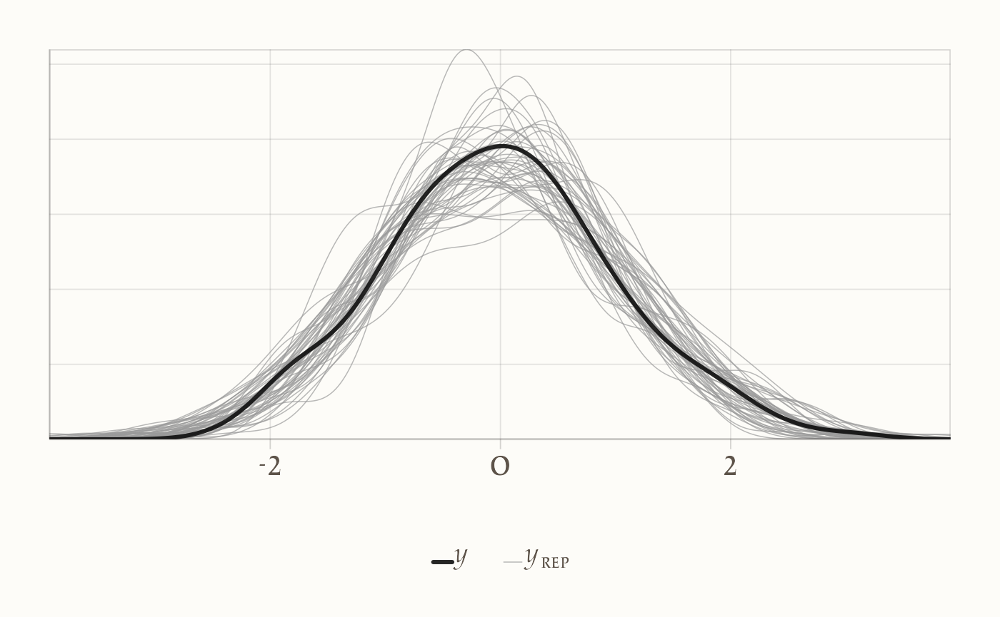
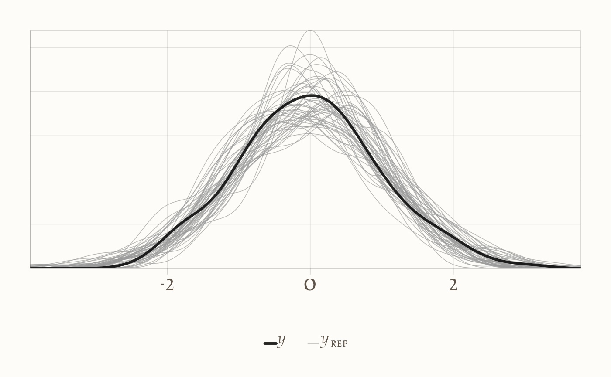

here::here("code", "_common.R") |>
source()
if (!requireNamespace("pacman")) install.packages("pacman")
pacman::p_load(cmdstanr, posterior, bayesplot, ggplot2, dplyr, tibble, forcats)
conflicts_prefer(posterior::ess_bulk)
conflicts_prefer(posterior::ess_tail)18 Confrontare due medie
Introduzione
Immagina uno studio in cui confrontiamo il punteggio medio di affetto negativo settimanale tra un gruppo che segue un breve training di mindfulness e un gruppo di controllo. La domanda sostantiva non è “c’è qualche differenza?” ma “di quanto differiscono i gruppi e quanto siamo incerti su questa differenza?”. È questa la prospettiva che adottiamo qui: invece di ridurre il problema a un verdetto sì/no, stimiamo l’intera distribuzione a posteriori della differenza tra le medie e traduciamo tale distribuzione in affermazioni pratiche rilevanti per la psicologia.
In un confronto tra due gruppi, c’è anche un aspetto spesso trascurato ma cruciale: la variabilità. I due gruppi possono avere la stessa dispersione oppure no. Se, per esempio, il training riduce l’affetto negativo medio ma produce anche risposte più eterogenee (alcuni migliorano molto, altri poco), allora la differenza tra deviazioni standard è informativa tanto quanto la differenza tra medie. L’approccio bayesiano rende naturale stimare congiuntamente entrambe le quantità e la loro incertezza, offrendo un quadro più ricco di quello fornito dal t-test tradizionale (Kruschke, 2013).
Per stabilizzare le stime e semplificare le scelte di prior, standardizziamo la variabile di esito \(y\) sull’intero campione (media 0, deviazione standard 1). La standardizzazione non altera le relazioni tra i gruppi, ma rende più trasparenti le ipotesi: a priori è ragionevole attendersi medie di gruppo non lontane da 0 e dispersioni dell’ordine dell’unità. Lavoreremo con due modelli semplici e didatticamente utili: un modello con varianza comune ai gruppi e un modello con varianze distinte. In entrambi useremo prior debolmente informative sulle medie (normali centrate in 0) e sulle deviazioni standard (esponenziali), coerenti con la variabile standardizzata.
La domanda metodologica non è quale ipotesi sia “vera”, ma quale modello predice meglio dati simili a quelli osservati mantenendo la massima parsimonia. Useremo quindi la densità predittiva logaritmica attesa (ELPD) stimata con PSIS-LOO per confrontare i due modelli: se il guadagno predittivo del modello più complesso (varianze distinte) è minimo rispetto alla sua incertezza, conviene preferire il modello con varianza comune; se invece il vantaggio è chiaro e stabile, scegliamo il modello più flessibile.
Il cuore dell’analisi rimane comunque la distribuzione a posteriori della differenza tra le medie. È questa distribuzione che risponde alla domanda scientifica, ed è su di essa che riportiamo intervalli di credibilità e probabilità a posteriori di scenari di interesse (per esempio, la probabilità che la differenza sia inferiore a −0.2 SD, una soglia che potremmo considerare rilevante in termini clinici).
Rispetto al t-test di Student, l’approccio bayesiano offre tre vantaggi pratici per la ricerca psicologica. Primo, fornisce stima e incertezza di tutte le quantità rilevanti (differenza di medie, differenza di varianze, grandezza dell’effetto), invece di un unico p-value. Secondo, consente di valutare l’equivalenza pratica attraverso una region of practical equivalence (ROPE): se quasi tutta la posteriore ricade entro una piccola regione attorno a zero, possiamo accettare l’irrilevanza pratica dell’effetto, cosa che il t-test non permette in modo diretto. Terzo, l’impostazione è robusta ed estendibile: quando i dati mostrano code pesanti o outlier, possiamo descriverli con una distribuzione t e stimarne anche il grado di “normalità”, mantenendo una lettura sostantiva chiara delle differenze tra gruppi (Kruschke, 2013).
In sintesi, in questo capitolo useremo Stan per stimare due modelli semplici e confrontarli sul piano predittivo, ma terremo sempre lo sguardo sulle conclusioni sostantive: nel nostro esempio, “di quanto” il training modifica l’affetto negativo medio, “quanto” è plausibile una differenza nulla o trascurabile, e “come” cambia l’eterogeneità delle risposte tra i partecipanti.
Transizione al codice
Nei prossimi paragrafi genereremo un piccolo dataset simulato per il caso mindfulness vs controllo, standardizzeremo l’esito, specificheremo in Stan un modello con varianza comune e uno con varianze distinte, quindi confronteremo le due specificazioni con PSIS-LOO e riporteremo la posteriore della differenza tra le medie con intervallo di credibilità e, dove appropriato, una valutazione ROPE per l’equivalenza pratica. L’obiettivo didattico è duplice: dare un codice leggibile a chi non è esperto e mostrare come le scelte modellistiche si traducano in interpretazioni psicologiche chiare.
Panoramica del capitolo
- Comprendere il problema del confronto tra due medie in un’ottica bayesiana.
- Motivare la standardizzazione dei dati e la scelta di priors debolmente informative.
- Implementare in Stan un modello con varianza comune e uno con varianze distinte.
- Valutare la capacità predittiva dei modelli attraverso PSIS-LOO.
- Interpretare la distribuzione a posteriori della differenza tra le medie e le verifiche predittive.
18.1 Codice R
# Simuliamo i dati di un piccolo studio psicologico
# Gruppo A = controllo, Gruppo B = training mindfulness
set.seed(123) # per rendere i risultati riproducibili
n_A <- 80 # numero partecipanti controllo
n_B <- 90 # numero partecipanti training
# Medie "vere" dei gruppi (in SD standardizzate)
true_mean_A <- 0.2 # controllo con affetto negativo leggermente più alto
true_mean_B <- -0.3 # training mindfulness riduce affetto negativo
# Deviazioni standard "vere"
true_sd_A <- 1.0
true_sd_B <- 1.0 # prova a cambiare in 1.4 per simulare varianze diverse
# Creiamo un data frame con le osservazioni
df <- tibble(
score = c(rnorm(n_A, true_mean_A, true_sd_A),
rnorm(n_B, true_mean_B, true_sd_B)),
group = factor(c(rep("Controllo", n_A), rep("Mindfulness", n_B)))
)
# Standardizziamo la variabile di esito
df <- df %>%
mutate(
score_std = (score - mean(score)) / sd(score),
g = as.integer(group) # Stan richiede indici numerici dei gruppi
)
# Prepariamo la lista di dati per Stan
stan_data <- list(
N = nrow(df), # numero totale osservazioni
J = 2L, # numero di gruppi
y = df$score_std, # variabile risposta standardizzata
g = df$g # indice di gruppo
)
glimpse(stan_data)
#> List of 4
#> $ N: int 170
#> $ J: int 2
#> $ y: num [1:170] -0.3016 0.0317 1.8369 0.3352 0.3945 ...
#> $ g: int [1:170] 1 1 1 1 1 1 1 1 1 1 ...18.1.1 Nota didattica
In questo esempio, la variabile score rappresenta il livello di affetto negativo. Abbiamo simulato una piccola differenza: in media, il gruppo mindfulness ha punteggi più bassi (cioè minore affetto negativo) rispetto al gruppo controllo. Standardizzando la variabile, lavoriamo sempre in “unità di deviazione standard”, semplificando l’interpretazione delle priors e delle stime.
18.1.2 Differenza di medie e ROPE
Prima ancora di stimare i modelli in Stan, possiamo calcolare la differenza empirica tra le medie e confrontarla con una regione di irrilevanza pratica (ROPE). Per esempio, supponiamo che differenze inferiori a 0.1 SD non abbiano rilevanza psicologica. Questo ci permette di introdurre un confronto diretto con il test t: il t-test risponde solo alla domanda “la differenza è zero?”, mentre l’approccio bayesiano ci consente di valutare “la differenza è psicologicamente importante?”.
# Differenza empirica tra le medie
mean_diff <- mean(df$score_std[df$group == "Mindfulness"]) -
mean(df$score_std[df$group == "Controllo"])
mean_diff
#> [1] -0.535
# Definiamo una ROPE di ±0.1 SD
rope_lower <- -0.1
rope_upper <- 0.1
cat("Differenza osservata =", round(mean_diff, 3),
" | ROPE = [", rope_lower, ",", rope_upper, "]\n")
#> Differenza osservata = -0.535 | ROPE = [ -0.1 , 0.1 ]Naturalmente, la vera potenza del metodo bayesiano emergerà quando stimiamo la distribuzione a posteriori della differenza di medie. Allora potremo calcolare direttamente la probabilità a posteriori che la differenza ricada dentro o fuori dalla ROPE, ottenendo un’informazione più ricca e interpretabile rispetto al semplice p-value.
18.2 Modello a varianza comune
L’ipotesi è che i due gruppi condividano la stessa dispersione attorno alle loro medie. Questa è spesso una buona approssimazione iniziale, riduce il numero di parametri e permette stime più stabili con campioni piccoli o moderati. Il punto centrale resta la differenza tra le medie: se il training mindfulness riduce l’affetto negativo, la media del gruppo “Mindfulness” sarà più bassa e la differenza “Mindfulness − Controllo” sarà negativa in unità di deviazione standard.
# Salviamo il modello Stan con varianza comune
stan_equal_var <- "
data {
int<lower=1> N; // numero di osservazioni
int<lower=2> J; // numero di gruppi (qui: 2)
vector[N] y; // esito standardizzato
array[N] int<lower=1, upper=J> g; // indice di gruppo per ogni osservazione
}
parameters {
vector[J] mu; // medie dei due gruppi
real<lower=0> sigma; // deviazione standard comune
}
model {
// Priors debolmente informative, coerenti con y standardizzata
mu ~ normal(0, 1.5);
sigma ~ exponential(1);
// Likelihood: ogni y appartiene al suo gruppo g[i]
for (i in 1:N)
y[i] ~ normal(mu[g[i]], sigma);
}
generated quantities {
vector[N] log_lik; // log-verosimiglianze per PSIS-LOO
vector[N] y_rep; // repliche per posterior predictive checks
real diff_mu; // differenza tra le medie (Gruppo 2 - Gruppo 1)
// calcolo log_lik e repliche
for (i in 1:N) {
log_lik[i] = normal_lpdf(y[i] | mu[g[i]], sigma);
y_rep[i] = normal_rng(mu[g[i]], sigma);
}
// differenza di interesse sostantivo:
// attenzione: per coerenza didattica, assumiamo g=1 -> Controllo, g=2 -> Mindfulness
diff_mu = mu[2] - mu[1];
}
"
# Scrittura su disco e compilazione
if (!dir.exists(here::here("stan"))) dir.create(here::here("stan"), recursive = TRUE)
writeLines(stan_equal_var, here::here("stan", "two_means_equal_var.stan"))
mod_eq <- cmdstan_model(here::here("stan", "two_means_equal_var.stan"))
# Campionamento dalla posteriore
fit_eq <- mod_eq$sample(
data = stan_data, # creato nella sezione precedente
seed = 2025,
chains = 4, parallel_chains = 4,
iter_warmup = 1000, iter_sampling = 1000,
refresh = 0
)Dopo l’esecuzione, verifichiamo a colpo d’occhio che i diagnostici principali siano buoni. Se R-hat è vicino a 1 e gli effective sample size sono adeguati, passiamo all’interpretazione. Usiamo direttamente le quantità generate nel blocco generated quantities, così lo studente vede continuità tra il modello e l’analisi a valle.
# Differenza tra medie: estraiamo il vettore 'diff_mu'
diff_draws <- fit_eq$draws(variables = "diff_mu", format = "draws_matrix")
# Riassunto compatto della posteriore: media, sd e intervallo di credibilità al 95%
q025 <- function(x) posterior::quantile2(x, probs = 0.025)
q975 <- function(x) posterior::quantile2(x, probs = 0.975)
posterior::summarize_draws(diff_draws, mean, sd, q025, q975)
#> # A tibble: 1 × 5
#> variable mean sd q2.5 q97.5
#> <chr> <dbl> <dbl> <dbl> <dbl>
#> 1 diff_mu -0.536 0.148 -0.817 -0.243L’oggetto diff_mu è la quantità sostantiva principale. Se nel nostro esempio è negativo, indica che il gruppo mindfulness ha, in media, affetto negativo più basso del controllo. Per rendere più esplicito il legame con l’interpretazione psicologica, calcoliamo la probabilità a posteriori che la differenza sia clinicamente rilevante secondo una ROPE scelta dal ricercatore. Per esemplificare, usiamo ±0.1 SD come regione di irrilevanza pratica; adattare questa soglia al contesto è parte del lavoro scientifico.
# Calcolo ROPE: probabilità a posteriori dentro/fuori la regione
rope_lower <- -0.1
rope_upper <- 0.1
diff_vec <- as.numeric(diff_draws[, "diff_mu"])
p_in_rope <- mean(diff_vec > rope_lower & diff_vec < rope_upper)
p_below <- mean(diff_vec < rope_lower)
p_above <- mean(diff_vec > rope_upper)
tibble(
`P(diff in ROPE)` = p_in_rope,
`P(diff < lower)` = p_below,
`P(diff > upper)` = p_above
)
#> # A tibble: 1 × 3
#> `P(diff in ROPE)` `P(diff < lower)` `P(diff > upper)`
#> <dbl> <dbl> <dbl>
#> 1 0.0025 0.998 0Queste probabilità mostrano qualcosa che il t-test non fornisce: non solo se la differenza è “diversa da zero”, ma se è trascurabile, peggiorativa o migliorativa oltre una soglia ritenuta rilevante. In un report didattico, affiancherei a queste quantità un confronto predittivo e una verifica grafica della coerenza del modello con i dati.
A questo punto abbiamo tutto ciò che serve per la lettura sostantiva: una distribuzione a posteriori della differenza tra le medie con intervallo di credibilità, una probabilità a posteriori di effetti rilevanti o trascurabili e un controllo predittivo che ci dice se il modello è in grado di generare dati verosimili. Nel passaggio successivo introdurremo il modello con varianze distinte e useremo PSIS-LOO per verificare se l’aumento di complessità offre un miglioramento predittivo stabile; se non lo offre, resteremo sul modello parsimonioso a varianza comune, senza perdere nulla sul piano interpretativo centrale.
18.3 Modello a varianze distinte
L’ipotesi qui è che i due gruppi possano avere eterogeneità diversa: ad esempio, il training di mindfulness potrebbe ridurre l’affetto negativo in media, ma con risposte più variabili tra i partecipanti rispetto al controllo. Stimiamo quindi \(\mu_1,\mu_2\) e \(\sigma_1,\sigma_2\). Come prima, lavoriamo su dati standardizzati: priors mu ~ Normal(0, 1.5) e sigma ~ Exponential(1).
# Modello Stan: varianze distinte
stan_unequal_var <- "
data {
int<lower=1> N; // numero di osservazioni
int<lower=2> J; // numero di gruppi (qui: 2)
vector[N] y; // esito standardizzato
array[N] int<lower=1, upper=J> g; // indice di gruppo
}
parameters {
vector[J] mu; // medie per gruppo
vector<lower=0>[J] sigma; // sd specifica di gruppo
}
model {
// Priors debolmente informative
mu ~ normal(0, 1.5);
sigma ~ exponential(1);
// Likelihood con sd per gruppo
for (i in 1:N)
y[i] ~ normal(mu[g[i]], sigma[g[i]]);
}
generated quantities {
vector[N] log_lik; // per PSIS-LOO
vector[N] y_rep; // posterior predictive checks
real diff_mu; // mu[2] - mu[1], Mindfulness - Controllo
real diff_sigma; // sigma[2] - sigma[1]
for (i in 1:N) {
log_lik[i] = normal_lpdf(y[i] | mu[g[i]], sigma[g[i]]);
y_rep[i] = normal_rng(mu[g[i]], sigma[g[i]]);
}
diff_mu = mu[2] - mu[1];
diff_sigma = sigma[2] - sigma[1];
}
"
# Scrittura su disco e compilazione
if (!dir.exists(here::here("stan"))) dir.create(here::here("stan"), recursive = TRUE)
writeLines(stan_unequal_var, here::here("stan", "two_means_unequal_var.stan"))
mod_neq <- cmdstan_model(here::here("stan", "two_means_unequal_var.stan"))
# Campionamento
fit_neq <- mod_neq$sample(
data = stan_data, # come definito nella sezione precedente
seed = 2025,
chains = 4, parallel_chains = 4,
iter_warmup = 1000, iter_sampling = 1000,
refresh = 0
)18.3.1 Lettura sostantiva dei parametri
Come prima, l’oggetto chiave è diff_mu = mu[2] − mu[1] (Mindfulness − Controllo). Qui però abbiamo anche diff_sigma = sigma[2] − sigma[1], utile per capire se il training modifica l’eterogeneità delle risposte.
# Estraiamo le quantità principali
neq_draws_mu <- fit_neq$draws(variables = c("mu[1]", "mu[2]", "diff_mu"), format = "draws_matrix")
neq_draws_sigma <- fit_neq$draws(variables = c("sigma[1]", "sigma[2]", "diff_sigma"), format = "draws_matrix")
q025 <- function(x) posterior::quantile2(x, probs = 0.025)
q975 <- function(x) posterior::quantile2(x, probs = 0.975)
# Riassunti posteriori
posterior::summarize_draws(neq_draws_mu, mean, sd, q025, q975)
#> # A tibble: 3 × 5
#> variable mean sd q2.5 q97.5
#> <chr> <dbl> <dbl> <dbl> <dbl>
#> 1 mu[1] 0.282 0.102 0.082 0.483
#> 2 mu[2] -0.254 0.108 -0.461 -0.041
#> 3 diff_mu -0.536 0.148 -0.826 -0.249posterior::summarize_draws(neq_draws_sigma, mean, sd, q025, q975)
#> # A tibble: 3 × 5
#> variable mean sd q2.5 q97.5
#> <chr> <dbl> <dbl> <dbl> <dbl>
#> 1 sigma[1] 0.940 0.076 0.804 1.105
#> 2 sigma[2] 1.003 0.076 0.871 1.165
#> 3 diff_sigma 0.063 0.107 -0.144 0.274Se diff_mu è negativo, il gruppo mindfulness ha in media affetto negativo più basso del controllo. Se diff_sigma è positivo, il gruppo mindfulness è più eterogeneo; se negativo, è più omogeneo. Questo secondo aspetto è spesso ignorato dal t-test, ma è scientificamente rilevante: un intervento può ridurre la media e cambiare la variabilità delle risposte.
Per continuità con la sezione precedente, calcoliamo anche la ROPE sulla differenza di medie. La ROPE serve a rispondere alla domanda: l’effetto è praticamente trascurabile?
# ROPE su diff_mu (stessa soglia di prima)
rope_lower <- -0.1
rope_upper <- 0.1
diff_mu_vec <- as.numeric(neq_draws_mu[, "diff_mu"])
p_in_rope_neq <- mean(diff_mu_vec > rope_lower & diff_mu_vec < rope_upper)
p_below_neq <- mean(diff_mu_vec < rope_lower)
p_above_neq <- mean(diff_mu_vec > rope_upper)
tibble(
Model = "Varianze distinte",
`P(diff in ROPE)` = p_in_rope_neq,
`P(diff < lower)` = p_below_neq,
`P(diff > upper)` = p_above_neq
)
#> # A tibble: 1 × 4
#> Model `P(diff in ROPE)` `P(diff < lower)` `P(diff > upper)`
#> <chr> <dbl> <dbl> <dbl>
#> 1 Varianze distinte 0.0005 1.000 018.3.2 Confronto predittivo con PSIS-LOO
Ora confrontiamo modello a varianza comune (fit_eq) e modello a varianze distinte (fit_neq) usando ELPD (più alto è meglio). Guardiamo anche i diagnostici Pareto-k: idealmente < 0.7. Se il vantaggio del modello più complesso è piccolo e incerto, restiamo sul modello parsimonioso; se è chiaro e stabile, accettiamo la maggiore complessità.
# LOO per entrambi i modelli
loo_eq <- fit_eq$loo()
loo_neq <- fit_neq$loo()
print(loo_eq)
#>
#> Computed from 4000 by 170 log-likelihood matrix.
#>
#> Estimate SE
#> elpd_loo -237.5 9.8
#> p_loo 3.1 0.5
#> looic 474.9 19.5
#> ------
#> MCSE of elpd_loo is 0.0.
#> MCSE and ESS estimates assume MCMC draws (r_eff in [0.8, 1.1]).
#>
#> All Pareto k estimates are good (k < 0.7).
#> See help('pareto-k-diagnostic') for details.print(loo_neq)
#>
#> Computed from 4000 by 170 log-likelihood matrix.
#>
#> Estimate SE
#> elpd_loo -238.3 9.8
#> p_loo 4.1 0.8
#> looic 476.6 19.6
#> ------
#> MCSE of elpd_loo is 0.0.
#> MCSE and ESS estimates assume MCMC draws (r_eff in [1.0, 1.3]).
#>
#> All Pareto k estimates are good (k < 0.7).
#> See help('pareto-k-diagnostic') for details.# Confronto
comp <- loo::loo_compare(list(equal_var = loo_eq, unequal_var = loo_neq))
comp_df <- as.data.frame(comp)
comp_df
#> elpd_diff se_diff elpd_loo se_elpd_loo p_loo se_p_loo looic
#> equal_var 0.000 0.00 -237 9.76 3.05 0.539 475
#> unequal_var -0.856 0.61 -238 9.81 4.06 0.780 477
#> se_looic
#> equal_var 19.5
#> unequal_var 19.6Per una decisione didatticamente “manuale”, possiamo usare una regola semplice: se |ΔELPD| < 2 × SE(Δ), consideriamo i modelli sostanzialmente equivalenti; in tal caso scegliamo il modello più semplice.
# Piccolo helper decisionale
delta_elpd <- comp_df$elpd_diff[1] # per la riga in cima
se_delta <- comp_df$se_diff[1]
decision <- if (abs(delta_elpd) < 2 * se_delta) {
"Modelli predittivamente equivalenti: preferire la varianza comune per parsimonia."
} else if (delta_elpd > 0) {
"Il modello a varianze distinte offre un vantaggio predittivo credibile: preferirlo."
} else {
"Il modello a varianza comune è migliore: preferirlo."
}
tibble(Delta_ELPD = delta_elpd, SE_Delta = se_delta, Decisione = decision)
#> # A tibble: 1 × 3
#> Delta_ELPD SE_Delta Decisione
#> <dbl> <dbl> <chr>
#> 1 0 0 Il modello a varianza comune è migliore: preferirlo.18.3.3 Posterior predictive checks
Verifichiamo che i due modelli riproducano la forma della distribuzione osservata. Se entrambi vanno bene, la scelta si gioca sull’ELPD; se uno mostra discrepanze sistematiche, quello è il segnale più forte.
# Equal variance
yrep_eq <- fit_eq$draws("y_rep", format = "matrix")
bayesplot::ppc_dens_overlay(y = stan_data$y, yrep = yrep_eq[1:50, ])
# Unequal variances
yrep_neq <- fit_neq$draws("y_rep", format = "matrix")
bayesplot::ppc_dens_overlay(y = stan_data$y, yrep = yrep_neq[1:50, ])
18.4 Cosa impariamo
Differenza tra le medie. La posteriore di diff_mu dice di quanto il training modifica l’affetto negativo medio, con intervallo di credibilità; la ROPE ci dice se l’effetto è praticamente trascurabile o rilevante. Questo è un vantaggio diretto rispetto al t-test, che non fornisce probabilità di “effetto rilevante” né gestisce l’equivalenza pratica in modo naturale.
Differenza tra varianze. La posteriore di diff_sigma chiarisce se l’intervento modifica l’eterogeneità delle risposte: informazione spesso ignorata, ma importante in psicologia applicata.
Capacità predittiva. Il confronto PSIS-LOO ci guida nella scelta del livello di complessità. Se ΔELPD è piccolo e incerto, preferiamo la parsimonia (varianza comune); se il vantaggio è stabile e sostanziale, ha senso adottare il modello con varianze distinte.
18.5 Dalle medie di gruppo all’analisi idiografica
Finora ci siamo concentrati sulle medie di gruppo, chiedendoci quanto l’intervento mindfulness modifichi, in media, l’affetto negativo. Ma due gruppi con medie simili possono nascondere storie individuali molto diverse: c’è chi migliora nettamente, chi peggiora, chi non cambia. Per restituire queste differenze, spostiamo l’attenzione sul singolo partecipante.
In psicologia clinica, uno strumento tradizionale per valutare il cambiamento individuale è il Reliable Change Index (RCI): si guarda la differenza tra post e pre e la si rapporta all’errore atteso della differenza. Se la differenza “supera la soglia”, il cambiamento è detto affidabile (Jacobson & Truax, 1991). È un’idea semplice e utile, ma lascia fuori due elementi che per noi sono centrali: l’incertezza e la rilevanza pratica del cambiamento. In termini bayesiani, invece di un verdetto sì/no, vogliamo stimare quanto è plausibile che il cambiamento di un individuo sia nullo, trascurabile, o clinicamente rilevante.
Lavoreremo quindi con una piccola estensione bayesiana dell’RCI: per un singolo soggetto, consideriamo la differenza \(\Delta = \text{post} - \text{pre}\) e, nota l’incertezza di misura del test (che riassumiamo tramite lo standard error of measurement, SEM), costruiamo la distribuzione a posteriori di \(\Delta\). Da quella distribuzione potremo leggere quantità davvero utili: la probabilità che \(\Delta\) sia trascurabile (dentro una ROPE) oppure rilevante (oltre una soglia clinica \(\tau\)).
La logica è la stessa usata a livello di gruppo con la differenza tra medie: là guardavamo \(\mu_2 - \mu_1\) e una ROPE attorno a zero; qui guardiamo \(\Delta\) per una persona, con una ROPE e una soglia \(\tau\) espresse nella stessa metrica che abbiamo usato in precedenza in questo capitolo (unità di deviazione standard).
18.5.1 Un modello bayesiano minimale per la stima del cambiamento individuale (RCI bayesiano)
Il modello che presentiamo rappresenta una versione volutamente semplificata del reliable change index (RCI) in chiave bayesiana. L’obiettivo è introdurre lo studente a questi concetti attraverso un esempio trasparente e computazionalmente immediato. La scelta di un modello Normale–Normale in forma chiusa permette infatti di preservare la chiarezza espositiva senza rinunciare alla completezza concettuale.
18.5.1.1 Struttura del modello
L’input del modello è costituito dai punteggi pre-test e post-test del singolo partecipante, insieme alla deviazione standard e all’affidabilità dello strumento. L’output è la distribuzione a posteriori del cambiamento individuale Δ, dalla quale possiamo derivare tre probabilità clinicamente rilevanti. Tutti i calcoli vengono condotti nella stessa metrica standardizzata (unità di deviazione standard) adottata per le analisi di gruppo.
La specificazione è la seguente:
-
Verosimiglianza: la differenza osservata tra post e pre (D) è distribuita come
\[ D \sim \mathcal{N}(\Delta, \text{SEdiff}^2) \] dove SEdiff è l’errore standard della differenza.
-
Prior: il vero cambiamento Δ segue una distribuzione Normale centrata in 0 con deviazione standard pari a
prior_sd_delta, a esprimere l’incertezza iniziale sulla sua entità:\[ \Delta \sim \mathcal{N}(0, \text{prior\_sd\_delta}^2). \] Per combinazione coniugata, la distribuzione a posteriori di Δ risulta ancora Normale, con parametri calcolabili tramite le formule standard di aggiornamento bayesiano.
18.5.1.2 Lo standard error della differenza
Elemento centrale del modello è il calcolo dello standard error della differenza (SEdiff), che riflette l’incertezza nella stima del cambiamento individuale tenendo conto dell’affidabilità del test. Si procede così:
-
si calcola l’errore standard di misura (SEM) come
\[ \text{SEM} = SD \times \sqrt{1 - \text{reliability}}, \] dove SD è la deviazione standard del test;
-
si ottiene quindi
\[ \text{SEdiff} = \sqrt{2} \times \text{SEM}, \] assumendo che pre e post abbiano la stessa metrica e affidabilità.
18.5.1.3 Probabilità di interesse clinico
Dalla distribuzione a posteriori di Δ si ricavano tre probabilità sostantive:
- la probabilità che Δ cada nella ROPE (es. ±0.10 SD), cioè che il cambiamento sia trascurabile;
- la probabilità che Δ superi una soglia positiva τ (es. +0.30 SD), indicativa di un miglioramento clinicamente rilevante;
- la probabilità che Δ sia minore di –τ, indicativa di un peggioramento rilevante.
Queste probabilità si ottengono integrando la distribuzione a posteriori sugli intervalli corrispondenti.
18.5.1.4 Esempio numerico
Applichiamo il modello a un soggetto del gruppo sperimentale in uno studio sull’intervento mindfulness. I suoi punteggi sono: pre = 0.40, post = 0.05 (espressi in SD). Assumiamo SD = valore campionario dell’intero dataset e un’affidabilità del test pari a 0.85.
# ------------------------------------------------------------
# RCI bayesiano (versione semplice, chiusa-forma)
# ------------------------------------------------------------
# Likelihood: D = post - pre ~ Normal(Delta, SEdiff^2)
# Prior: Delta ~ Normal(0, prior_sd_delta^2)
# Posterior: Delta | D ~ Normal(m_post, s_post^2)
# ------------------------------------------------------------
rci_bayes <- function(pre, post,
test_sd, reliability,
rope_width = 0.10, # ROPE ±0.10 SD (coerente con capitolo)
tau_clin = 0.30, # soglia clinica 0.30 SD (esempio)
prior_sd_delta = 0.60) {
# 1) Differenza osservata
D <- post - pre
# 2) SEM e SE della differenza
# SEM = SD * sqrt(1 - reliability)
SEM <- test_sd * sqrt(max(0, 1 - reliability))
SEdiff <- sqrt(SEM^2 + SEM^2) # ipotesi: stessa metrica/affidabilità a pre e post
# 3) Prior e posteriori (Normale–Normale)
s0 <- prior_sd_delta
s <- SEdiff
s2_post <- 1 / (1/s0^2 + 1/s^2)
s_post <- sqrt(s2_post)
m_post <- (s2_post / s^2) * D
# 4) Probabilità di interesse
p_in_rope <- pnorm( rope_width, mean = m_post, sd = s_post) -
pnorm(-rope_width, mean = m_post, sd = s_post)
p_gt_tau <- 1 - pnorm(tau_clin, mean = m_post, sd = s_post)
p_lt_neg_tau<- pnorm(-tau_clin, mean = m_post, sd = s_post)
list(
observed_diff = D,
SEM = SEM,
SEdiff = SEdiff,
prior_sd_delta = s0,
post_mean = m_post,
post_sd = s_post,
rope = c(-rope_width, rope_width),
tau_clin = tau_clin,
probs = c(
P_in_ROPE = p_in_rope,
P_diff_gt_tau = p_gt_tau,
P_diff_lt_neg_tau = p_lt_neg_tau
)
)
}# 'df' proviene dalle sezioni precedenti del capitolo (score in SD naturali)
test_sd <- sd(df$score)
res_demo <- rci_bayes(
pre = 0.40,
post = 0.05,
test_sd = test_sd,
reliability = 0.85,
rope_width = 0.10, # ROPE ±0.10 SD (trascurabile)
tau_clin = 0.30, # soglia clinica 0.30 SD (rilevante)
prior_sd_delta = 0.60
)
cat(sprintf(
"\nRCI bayesiano (soggetto esempio)\n---------------------------------\nDiff. osservata (post-pre): %.3f\nSEM: %.3f | SE diff: %.3f\nPosterior Delta ~ Normal(%.3f, %.3f^2)\nROPE: [%.2f, %.2f] | tau_clin: ±%.2f\nP(Delta in ROPE) = %.3f\nP(Delta > tau_clin) = %.3f\nP(Delta < -tau_clin) = %.3f\n",
res_demo$observed_diff, res_demo$SEM, res_demo$SEdiff,
res_demo$post_mean, res_demo$post_sd,
res_demo$rope[1], res_demo$rope[2], res_demo$tau_clin,
res_demo$probs["P_in_ROPE"], res_demo$probs["P_diff_gt_tau"], res_demo$probs["P_diff_lt_neg_tau"]
))
#>
#> RCI bayesiano (soggetto esempio)
#> ---------------------------------
#> Diff. osservata (post-pre): -0.350
#> SEM: 0.384 | SE diff: 0.543
#> Posterior Delta ~ Normal(-0.192, 0.403^2)
#> ROPE: [-0.10, 0.10] | tau_clin: ±0.30
#> P(Delta in ROPE) = 0.175
#> P(Delta > tau_clin) = 0.111
#> P(Delta < -tau_clin) = 0.395Il modello produce:
- differenza osservata: –0.350 SD;
- SEM = 0.384, SEdiff = 0.543;
- distribuzione a posteriori di Δ ~ Normal(–0.192, 0.403²).
In termini clinici:
- P(Δ in ROPE) = 0.175 → cambiamento probabilmente non trascurabile;
- P(Δ > 0.30) = 0.111 → miglioramento poco plausibile;
- P(Δ < –0.30) = 0.395 → peggioramento moderato plausibile.
18.5.1.5 Interpretazione
La stima bayesiana attenua la differenza osservata, portandola da –0.350 a –0.192 SD: un effetto di regolarizzazione tipico dell’approccio bayesiano, che combina dati e informazione a priori. Le probabilità a posteriori rendono chiaro che il cambiamento del soggetto non è facilmente classificabile come miglioramento o stabilità: la possibilità di un peggioramento moderato risulta la più consistente, ma non esclusiva.
Questo esempio mette in evidenza il valore dell’approccio bayesiano: non un singolo verdetto, ma una mappa probabilistica delle ipotesi clinicamente rilevanti. La trasparenza del modello consente anche di riflettere criticamente sulla scelta dei parametri (affidabilità, SD, ampiezza della ROPE e soglia τ), che devono essere motivati in base a evidenze empiriche e convenzioni cliniche. In questo modo, lo stesso schema logico che abbiamo applicato ai gruppi diventa disponibile anche per l’analisi del singolo: non un verdetto dicotomico, ma una distribuzione di probabilità che rende esplicita l’incertezza e la rilevanza clinica del cambiamento.
18.5.1.6 Prospettive
La versione proposta ha finalità introduttive. In un contesto di ricerca avanzato, il modello in forma chiusa può essere sostituito da implementazioni in linguaggio Stan, che consentono di modellare esplicitamente gli errori di misura e di passare a modelli gerarchici capaci di integrare stime individuali e differenze di gruppo. La coerenza concettuale dell’approccio bayesiano si manifesta così su più livelli: stimare differenze tra gruppi e stimare cambiamenti individuali seguono lo stesso schema logico, garantendo un quadro inferenziale unificato e potente per la ricerca psicologica.
Riflessioni conclusive
L’analisi sviluppata in questo capitolo mette in evidenza i punti di forza dell’approccio bayesiano al confronto tra gruppi e, più in generale, alla valutazione del cambiamento psicologico. La quantità centrale non è più un singolo numero o un p-value, ma l’intera distribuzione a posteriori delle differenze che ci interessano. È questa distribuzione che racconta la storia sostantiva: nel nostro esempio, di quanto il gruppo mindfulness differisce, in media, dal gruppo di controllo. Non otteniamo soltanto una stima puntuale, ma anche l’incertezza che accompagna ogni possibile valore della differenza. Questo ci consente di andare oltre il verdetto dicotomico “c’è / non c’è differenza” e di ragionare invece in termini di gradazioni di plausibilità.
Un secondo aspetto riguarda la possibilità di valutare la rilevanza pratica degli effetti. Introdurre una region of practical equivalence (ROPE) ci permette di distinguere tra differenze che, pur statisticamente rilevabili, sono trascurabili dal punto di vista psicologico e differenze che invece hanno un impatto sostantivo. In questo modo possiamo rispondere a domande clinicamente significative, come “quanto è probabile che l’effetto sia non solo diverso da zero, ma anche sufficientemente grande da essere rilevante?”.
Il confronto tra modelli con varianza comune e modelli con varianze distinte ci ha mostrato inoltre come ogni assunzione statistica vada valutata in termini predittivi. Grazie al criterio ELPD stimato con PSIS-LOO abbiamo potuto verificare se la maggiore complessità introdotta dal modello con varianze distinte migliorasse davvero la capacità di predire dati simili ai nostri. Quando il guadagno è minimo, la parsimonia suggerisce di mantenere il modello più semplice; quando invece il vantaggio predittivo è chiaro, si giustifica la maggiore complessità. Questo modo di ragionare è più trasparente e più vicino alla logica scientifica rispetto all’alternativa frequentista, in cui le scelte modellistiche sono spesso delegate a test poco interpretabili.
Il passaggio all’analisi ideografica, con la versione bayesiana del Reliable Change Index, amplia ulteriormente la prospettiva. Se l’analisi di gruppo ci dice cosa accade in media, l’analisi del cambiamento individuale ci mostra quanto un intervento sia stato efficace per ciascun partecipante. Qui il vantaggio del ragionamento bayesiano è evidente: invece di un verdetto rigido (“cambiamento affidabile sì/no”), possiamo stimare la probabilità che un miglioramento sia trascurabile o clinicamente rilevante per il singolo individuo. In questo modo, i due livelli di analisi — collettivo e individuale — non sono più separati, ma si integrano in un quadro unitario.
In sintesi, l’approccio bayesiano ci insegna che l’inferenza non riguarda tanto il respingere o meno un’ipotesi nulla, quanto il descrivere la plausibilità di diversi scenari e collegarla al significato psicologico dei dati. Ciò vale tanto per le differenze tra gruppi quanto per i cambiamenti nei singoli individui. Questa prospettiva porta la statistica più vicina alle domande reali della psicologia: non solo “esiste un effetto?”, ma “quanto è grande?”, “quanto è incerto?”, “quanto è rilevante per la pratica clinica o applicativa?”, e perfino “quanto è plausibile che questo singolo paziente abbia beneficiato dell’intervento?”. È qui che l’approccio bayesiano mostra il suo valore aggiunto, trasformando l’analisi dei dati in uno strumento flessibile, trasparente e sostantivamente informativo.
Bibliografia
Jacobson, N. S., & Truax, P. (1991). Clinical significance: A statistical approach to defining meaningful change in psychotherapy research. Journal of Consulting and Clinical Psychology, 59(1), 12–19. https://doi.org/10.1037/0022-006X.59.1.12
Kruschke, J. K. (2013). Bayesian estimation supersedes the t test. Journal of Experimental Psychology: General, 142(2), 573–603.